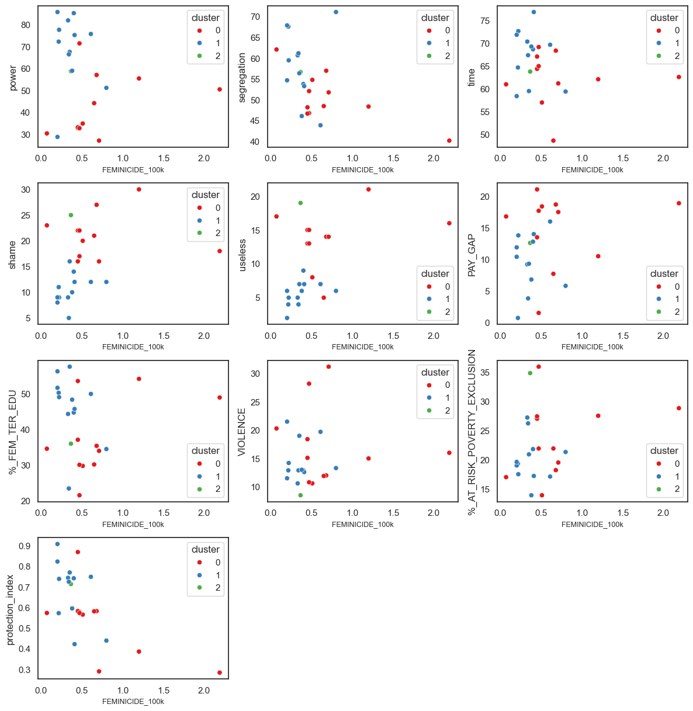
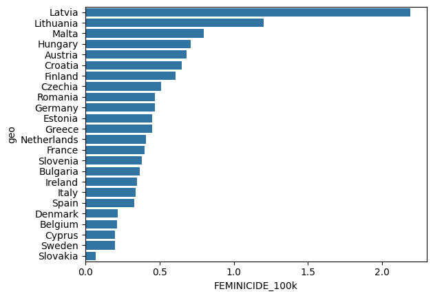
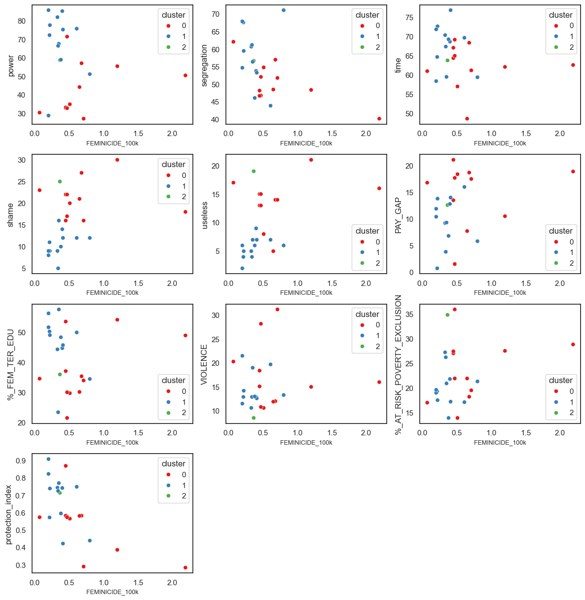
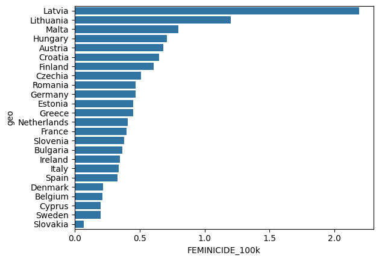

# Dati Femminicidio (hundred thousand inhabitants) EUROSTAT # ( Dati bulgaria - belgio - denmark - Estonia da WAVE Country Report 2023) # Gender equality index campi-> POWER(position among istitutions and company) , SEGREGATION (difference in edu field) , TIME (care activities,cooking,social activities) # FRA survey 2012 questions: reason to not contacted services after violence, economic violence during life #protection index: presi dati su Wave country report 2023 su: numero aiuto nazionale, chiamate ricevute, # n shelter, letti, n woman centers, presenza supporto violenza e piano prevenzione. #Trasformati in dummy (per presenza/assenza) o rapportati alla popolazione per quelle numeriche. # dati Poi normalizzati e calcolata la media semplice senza ponderazione.
Link al repo spiegare scelta feature basata su relazioni lineari e cluster
REGRESSIONE LINEARE R2 0.765 P(F)= 0.00879
# VIOLENCE FEMALE_EMPLOYMENT %_FEM_TER_EDU
'protection_index','%_AT_RISK_POVERTY_EXCLUSION',
'power','segregation','time','shame','useless',
'PAY_GAP', 'DIVORCE_RATE','economic_violence'
cluster
0 0.713636
1 0.371250
2 0.365000
COEFFICIENTI CORRELAZIONE LINEARE
FEMINICIDE_100k
FEMINICIDE_100k 1.000000
power -0.146734
segregation -0.497518
time -0.214998
shame 0.333514
useless 0.415010
economic_violence 0.266780
PAY_GAP 0.255228
DIVORCE_RATE 0.416077
FEMALE_EMPLOYMENT 0.140595
%_FEM_TER_EDU 0.060473
VIOLENCE 0.053978
%_AT_RISK_POVERTY_EXCLUSION 0.281343
protection_index -0.647621
 



MODELLO LOO RANDOM FOREST (standard 4 max depth, 300 estimators)
Abbiamo scartato le variabili 'FEMALE_EMPLOYMENT','DIVORCE_RATE','economic_violence'
LOOCV Accuracy: 0.9583333333333334
Confusion Matrix:
[[11 0 0]
[ 0 12 0]
[ 1 0 0]]
Precision classe 0: 0.9166666666666666
Recall classe 0: 1.0
shame 0.260871
useless 0.213648
power 0.123402
PAY_GAP 0.072879
protection_index 0.068161
segregation 0.057960
%_FEM_TER_EDU 0.054418
time 0.051982
%_AT_RISK_POVERTY_EXCLUSION 0.051521
VIOLENCE 0.045157